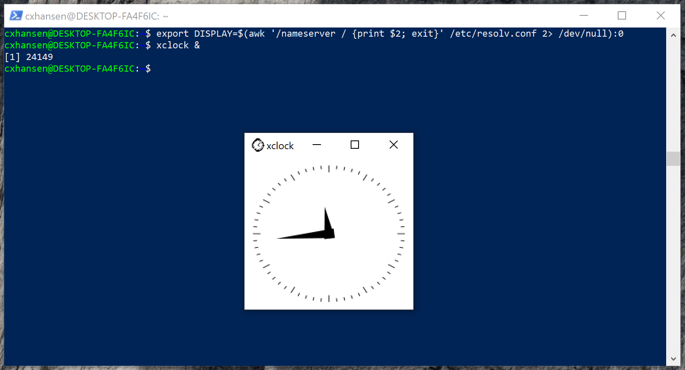

Overview
Windows Subsystem for Linux version 2 (WSL2) brings something like a native Linux environment to Windows. And because it’s native, we can even run Docker on WSL2 and access the running containers from the Windows host without hassle.
Dependencies
All that is required to run WSL2 is Windows Server 2019 or higher, or Windows 10 (any edition) build 2004 or higher. And, of course, we must also install a working Linux distribution. In addition to this, the following are useful additions:
- enable OpenSSH client
- install VcXsrv
- install Visual Studio Code, with remote SSH and WSL extensions
OpenSSH allows one to work with remote instances. Such instances could be Docker images running locally inside WSL2, so the term ‘remote’ is used very loosely.
VcXsrv is an X11 client for Windows. It should be considered optional, but it allows one to use native Linux GUI apps that are installed inside WSL2. It should be noted that a future version of WSL2 will support native GUIs (presumably by bundling VcXsrv or Xming), so this will become unnecessary at some point.
Finally, Visual Studio Code (vscode) is an extensible text editor developed by Microsoft. In particular, Microsoft have developed an extension that enables one to use a locally installed version of vscode as an IDE for WSL2.
Enable OpenSSH client
To confirm OpenSSH is available for install, open PowerShell as administrator and run:
> Get-WindowsCapability -Online | ? Name -like 'OpenSSH*'
If OpenSSH is available, you’ll see something like:
Name : OpenSSH.Client~~~~0.0.1.0
State : Installed
Name : OpenSSH.Server~~~~0.0.1.0
State : NotPresent
To enable OpenSSH, run:
> Add-WindowsCapability -Online -Name OpenSSH.Client~~~~0.0.1.0
Enable WSL2
To enable WSL2, open PowerShell as administrator and run:
> dism.exe /online /enable-feature /featurename:Microsoft-Windows-Subsystem-Linux /all /norestart
> dism.exe /online /enable-feature /featurename:VirtualMachinePlatform /all /norestart
You will need to restart Windows at this point. After rebooting, download and run the following installer:
Then, open PowerShell as administrator and run:
> wsl --set-default-version 2
https://docs.microsoft.com/en-us/windows/wsl/install-win10
Install Ubuntu 20.04 (sans Windows Store)
Installing a Linux distribution is easily done via the Windows Store. However, in an enterprise environment where Store access is limited, or where one simply does not wish to use the Store, one can still download distributions directly, as listed:
Manually download Windows Subsystem for Linux distro packages
In our case, we download Ubuntu 20.04, which is the current LTS version of Ubuntu:
We’ll install Ubuntu in C:\Program Files\Linux, though perhaps users might rather place it somewhere in their own user directory. To create this folder, and then download the above file from PowerShell run:
> mkdir 'c:\Program Files\Linux'
> cd 'c:\Program Files\Linux'
> curl.exe -L -o ubuntu-2004.appx https://aka.ms/wslubuntu2004
It seems an appx file is just a zip archive, so rename the file and unzip it from PowerShell by running:
> Rename-Item .\ubuntu-2004.appx .\ubuntu-2004.zip
> Expand-Archive .\ubuntu-2004.zip .\ubuntu2004
To start Ubuntu, run:
> .\ubuntu2004\ubuntu2004.exe
The first time Ubuntu is run you will be prompted to add a username and password. It doesn’t really matter what you choose, but either way you’ll see something like the following:
> .\ubuntu2004\ubuntu2004.exe
Installing, this may take a few minutes...
Please create a default UNIX user account. The username does not need to match your Windows username.
For more information visit: https://aka.ms/wslusers
Enter new UNIX username: cxhansen
New password:
Retype new password:
passwd: password updated successfully
Installation successful!
To run a command as administrator (user "root"), use "sudo <command>".
See "man sudo_root" for details.
Welcome to Ubuntu 20.04 LTS (GNU/Linux 4.19.104-microsoft-standard x86_64)
* Documentation: https://help.ubuntu.com
* Management: https://landscape.canonical.com
* Support: https://ubuntu.com/advantage
System information as of Sat Jul 18 14:43:16 NZST 2020
System load: 0.16 Processes: 8
Usage of /: 0.4% of 250.98GB Users logged in: 0
Memory usage: 1% IPv4 address for eth0: 172.27.186.14
Swap usage: 0%
0 updates can be installed immediately.
0 of these updates are security updates.
The list of available updates is more than a week old.
To check for new updates run: sudo apt update
This message is shown once once a day. To disable it please create the
/home/cxhansen/.hushlogin file.
cxhansen@DESKTOP-FA4F6IC:~$
If Ubuntu is the only distribution installed, or it is the default distribution, simply running wsl from PowerShell will be enough to start it. The available distributions can be listed by running wsl -d. In this case, with only Ubuntu 20.04 installed so far, the output is as follows:
Windows Subsystem for Linux Distributions:
Ubuntu-20.04 (Default)
If more distributions were available, Ubuntu 20.04 could be started by running:
> wsl -d Ubuntu-20.04
and Ubuntu 20.04 can be set as the default by running:
> wsl -s Ubuntu-20.04
Install Docker on Ubuntu 20.04
Docker is available in the standard Ubuntu repositories, but it can be useful to use the official repositories instead. Docker has some prerequisites, which can be installed as follows:
$ sudo apt update
$ sudo apt -y install \
apt-transport-https ca-certificates curl gnupg-agent \
software-properties-common
Then add the Docker repositories, and install Docker:
$ curl -fsSL https://download.docker.com/linux/ubuntu/gpg | sudo apt-key add -
$ sudo apt-key fingerprint 0EBFCD88
$ sudo add-apt-repository \
"deb [arch=amd64] https://download.docker.com/linux/ubuntu \
$(lsb_release -cs) \
stable"
$ sudo apt update
$ sudo DEBIAN_FRONTEND=noninteractive \
apt -y install \
docker-ce docker-ce-cli containerd.io
In order to run Docker without using sudo, relevant users can be added to the Docker group:
$ usermod -aG docker <user>
The Docker daemon will not start automatically as for a standard Ubuntu installation, but it can be started manually by running:
$ sudo service docker start
To confirm it is running:
$ sudo service docker status
* Docker is running
And to confirm it works:
$ docker run hello-world
Hello from Docker!
This message shows that your installation appears to be working correctly.
To generate this message, Docker took the following steps:
1. The Docker client contacted the Docker daemon.
2. The Docker daemon pulled the "hello-world" image from the Docker Hub.
(amd64)
3. The Docker daemon created a new container from that image which runs the
executable that produces the output you are currently reading.
4. The Docker daemon streamed that output to the Docker client, which sent it
to your terminal.
To try something more ambitious, you can run an Ubuntu container with:
$ docker run -it ubuntu bash
Share images, automate workflows, and more with a free Docker ID:
https://hub.docker.com/
For more examples and ideas, visit:
https://docs.docker.com/get-started/
Install Docker Compose on Ubuntu 20.04
Docker Compose is a utility that allows one to coordinate the use of several containers, that is, to effectively treat several containers as a single runnable unit. To install:
$ sudo curl -L \
"https://github.com/docker/compose/releases/download/1.26.2/docker-compose-$(uname -s)-$(uname -m)" \
-o /usr/local/bin/docker-compose
$ chmod +x /usr/local/bin/docker-compose
$ docker-compose --version
docker-compose version 1.26.2, build eefe0d31
Install Visual Studio Code
Installing vscode is straightforward–simply run the installer found at the vscode website. When running vscode for the first time, one might see the following prompt:

Choose ‘Install’ to install the extension. Otherwise, press CTRL+SHIFT+X and search for ‘wsl’:

Many other useful extensions are available, including ‘Remote - SSH’, which allows one to edit files on any remote machine which is accessible by SSH.
When the WSL extension is installed, one can simply issue CODE <folder> & from within a running WSL instance to start vscode on the host machine:

Install VcXsrv
To install VcXsrv, simply download and run the installer from the VcXsrv download page.
Note that VcXsrv works best with WSL2 if it is started with certain switches. Specifically, one should ensure the target is as follows (adapt as required if VcXsrv was installed in a different folder):
"C:\Program Files\VcXsrv\vcxsrv.exe" :0 -ac -terminate -lesspointer -multiwindow -clipboard -wgl
From inside the running Linux instance, one should also set the DISPLAY environment variable as follows:
$ export DISPLAY=$(awk '/nameserver / {print $2; exit}' /etc/resolv.conf 2> /dev/null):0
It should then be possible to run graphical applications using the host display:

Complete Linux Desktop
We can go further than simply opening graphical applications, and start a full-blown desktop. It’s pretty involved, so we won’t cover it here. But those interested could read, for example:
Ubuntu 20.04 Desktop GUI on WSL 2 on Surface Pro 4

Some Comments on Docker
Being able to access an isolated Linux environment via WSL2 brings considerable potential end-user enablement. But given Docker on Linux is a software abstraction, we can install a working version of Docker inside our Linux distribution relatively easily, and there are good reasons for doing so.
One might want to develop an application, and in doing so one might make use of a particular tool or framework that has no further use beyond the application in question. In this case, there is little point installing the tool generally, and littering the Linux host. Or, different applications might require different versions of the same tool, but it is not easy in practice to have multiple versions coexist. These use cases, and many others, are particularly well suited to containerisation.
Besides all this, a container is an excellent unit of deployment in general. One can commit containers to a container registry, or else commit the source (in the case of Docker, a so-called Dockerfile containing the recipe for building an image) to version control systems such as GitLab. GitLab has built-in CI/CD tools that can be utilised to automate the build and deployment of containers, including to container registries. Ace.
Personally, I use Docker to keep form cluttering the host OS in general. That is, I like to keep the host relatively pristine, and often use tools like databases or data science environments within the context of a container. In an enterprise environment, the benefit of this approach in keeping the amount of support required down should be relatively obvious.
Miscellaneous
It seems it is possible for the time in WSL to be out of sync with the system clock, and this can cause some issues. For example, Debian packages will sometimes fail to download. To fix this, run the following from the WSL terminal:
sudo hwclock --hctosys
Example - Run a local RStudio Server Instance
Rather than install R directly, we instead run R via Docker. In practice, we might have a standard R container that roughly replicates the existing server environment, and which ensures a consistent, but local, experience for anybody who cares to use it. As a demonstration, we build a container called rstudio. The demo is not yet a complete enterprise solution, but it is certainly usable, and it demonstrates the following:
- the use of a specific Linux distribution and version
- the use of a specific version of R (built from source)
- the use of a specific version of RStudio Server
- TinyTex $\LaTeX$ installation (much smaller than texlive)
- a number of host dependencies, such as libgdal-dev.
The complete Dockerfile is as follows:
ARG ubuntu_version=20.04
FROM ubuntu:$ubuntu_version
ARG cores=12
ARG r_version=4.0.2
ARG rstudio_version=1.3.1056
ENV DEBIAN_FRONTEND=noninteractive
ENV SHELL=/bin/bash
ENV R_VERSION=$r_version
ENV RSTUDIO_VERSION=$rstudio_version
# install necessary packages
RUN apt-get update && apt-get -y dist-upgrade && \
apt-get install -y --no-install-recommends \
gnupg2 dirmngr ca-certificates build-essential \
libblas3 libcairo2-dev '^perl-modules-[0-9].[0-9]+$' \
libssl-dev libgit2-dev libcurl4-gnutls-dev libxml2-dev curl wget htop locales \
openjdk-8-jdk python3-pip git vim libudunits2-dev \
grass gdal-bin libgdal-dev libgeos-dev libproj-dev proj-bin proj-data \
libblas3 libatlas-base-dev liblapack-dev libreadline-dev gfortran \
libx11-dev libxt-dev zlib1g-dev libbz2-dev liblzma-dev libpcre2-dev \
sudo lsb-release gdebi-core psmisc libclang-dev libapparmor1 && \
apt-get clean && \
rm -rf /var/lib/apt/lists/* && \
sed -i -e 's/# en_US.UTF-8 UTF-8/en_US.UTF-8 UTF-8/' /etc/locale.gen && \
dpkg-reconfigure --frontend=noninteractive locales && \
update-locale LANG=en_US.UTF-8 && \
wget -qO- "https://yihui.org/gh/tinytex/tools/install-unx.sh" | sh -s - --admin --no-path && \
mv /root/.TinyTeX /usr/local/TinyTex && \
/usr/local/TinyTex/bin/*/tlmgr path add && \
mkdir /src && \
cd /src && \
wget https://cran.r-project.org/src/base/R-$(echo $R_VERSION | cut -d'.' -f 1)/R-${R_VERSION}.tar.gz && \
tar -xvf R-${R_VERSION}.tar.gz && \
cd /src/R-${R_VERSION} && \
./configure --enable-R-shlib --with-blas --with-lapack --enable-memory-profiling --with-cairo && \
make -j $cores && make install && \
ln -s /usr/local/lib/R/bin/R /usr/bin/R && \
ln -s /usr/local/lib/R/bin/Rscript /usr/bin/Rscript && \
cd / && rm -fR src && \
echo "local({\n r <- getOption('repos')\n r['CRAN'] <- 'https://cloud.r-project.org'\n options(repos = r)\n})" > /usr/local/lib/R/etc/Rprofile.site && \
echo "PATH=/usr/local/sbin:/usr/local/bin:/usr/sbin:/usr/bin:/sbin:/bin" > /usr/local/lib/R/etc/Renviron.site && \
R -e "install.packages('renv')" && \
wget https://download2.rstudio.org/server/bionic/amd64/rstudio-server-${RSTUDIO_VERSION}-amd64.deb && \
gdebi --non-interactive rstudio-server-${RSTUDIO_VERSION}-amd64.deb && \
rm rstudio-server-${RSTUDIO_VERSION}-amd64.deb
# add user for demo purposes
RUN adduser --disabled-password --gecos "" guest && \
usermod --password $(openssl passwd -1 guest) guest && \
usermod -aG sudo guest
EXPOSE 8787
CMD service rstudio-server start && \
tail -f /dev/null
This Dockerfile can be built differently depending on build arguments. For example, we could build a version with Ubuntu 18.04 and R 3.6.3 as follows:
docker build \
-t rstudio:ubuntu18.04-3.6.3 \
--build-arg ubuntu_version=18.04 \
--build-arg r_version=3.6.3 \
--build-arg cores=8 \
.
(The cores argument dictates how many cores are used when compiling R from source.) To run this image with a persistent renv cache and R workspace, we could then run:
docker run -d --rm --name rstudio \
-p 8787:8787 \
-v /home/cxhansen/renvcache:/home/guest/.local/share/renv \
-v /home/cxhansen/Projects:/home/guest/My-Local-Workspace \
rstudio:ubuntu18.04-3.6.3
But we could just as easily build an image instead using Ubuntu 20.04, say, and R 4.0.2:
docker build \
-t rstudio:ubuntu20.04-4.0.2 \
--build-arg ubuntu_version=20.04 \
--build-arg r_version=4.0.2 \
--build-arg cores=8 \
.
and then run that, perhaps simultaneously, on a different local port:
docker run -d --rm --name rstudio \
-p 8788:8787 \
-v /home/cxhansen/renvcache:/home/guest/.local/share/renv \
-v /home/cxhansen/Projects:/home/guest/My-Local-Workspace \
rstudio:ubuntu20.04-4.0.2
Assuming such instances are running, we simply open a browser at localhost:8787 or localhost:8788 to access RStudio Server.